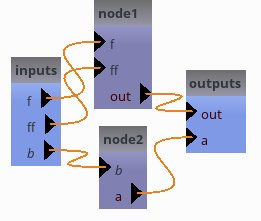
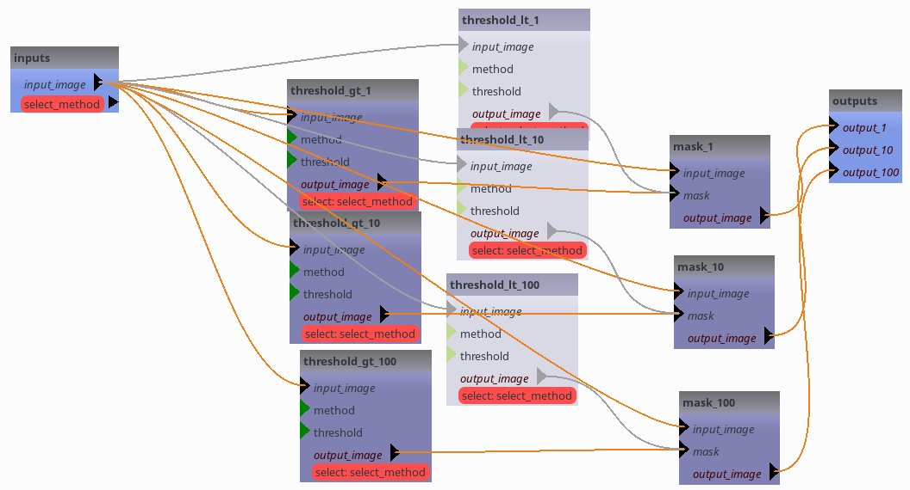
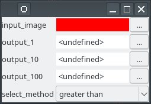
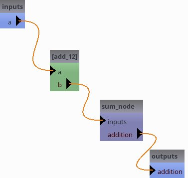
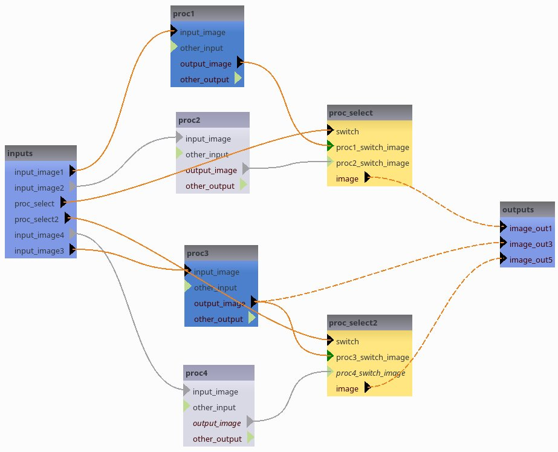
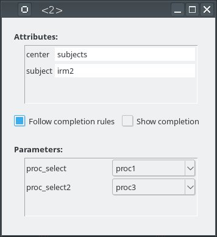
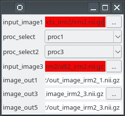
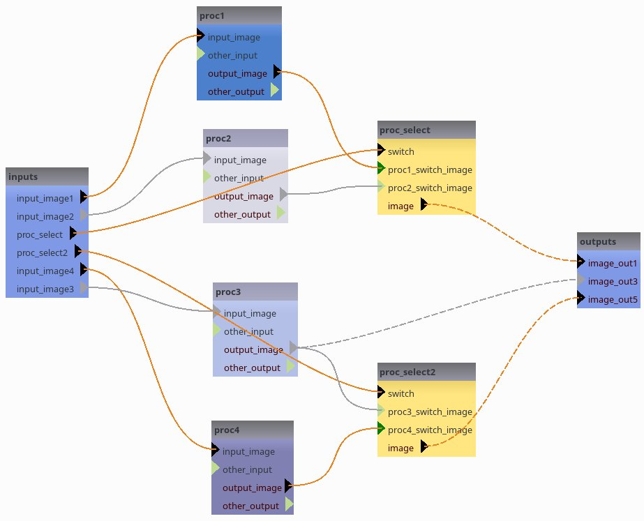
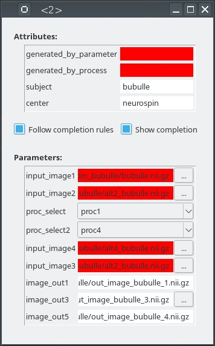

CAPSUL: chain algorithms in pipelines¶
Capsul is a simple and efficient Python tool that aims to organize a set of processings. It is accessible to everybody, and is reusable in various contexts. The project is hosted on github: https://github.com/populse/capsul.
Documentation: http://populse.github.io/capsul
The following examples are using CAPSUL, and PyQt (or PySide). To get the GUI running in a non-blocking way, the IPython notebook should be started with the option –gui=qt:
ipython notebook --gui=qt
Otherwise calls to the Qt loop will be blocking until windows are closed at each demo step.
Definitions
A Process is a processing that can derived directly from a Python function and that can be used as a building block of a pipeline.
A Pipeline is a series of connected processes.
First check
In order to test if capsul is installed on your machine, you can ask the the Capsul version:
[1]:
# just to ensure compatibility of this notebook with python 2 and 3
from __future__ import print_function
# the following to avoid display when this notebook is converted to sphinx doc
import os
if os.environ.get('ALLOW_GUI', 'TRUE') in ('FALSE', '0'):
use_gui = False
else:
%gui qt4
use_gui = True
from soma.qt_gui import qt_backend
qt_backend.set_qt_backend()
[2]:
import capsul
print(capsul.__version__)
2.6.1
Process and pipeline creation API
A process can be either a Process class instance, or a wrapping of a function
Process and parameters
[3]:
# Capsul import
from capsul.api import Process
# Trait import
from traits.api import Float
class Process1(Process):
f = Float(output=False)
def __init__(self):
super(Process1, self).__init__()
self.add_trait("ff", Float(output=False))
self.add_trait("out", Float(output=True))
def _run_process(self):
self.out = self.f + self.ff
print('Process1 execution, f:', self.f, ', ff:', self.ff)
process = Process1()
print(process.user_traits().keys())
process.ff = 132.6
process.f = 13.3
#execution
process()
print('Process result =', process.out)
---------------------------------------------------------------------------
ModuleNotFoundError Traceback (most recent call last)
Cell In[3], line 2
1 # Capsul import
----> 2 from capsul.api import Process
4 # Trait import
5 from traits.api import Float
File ~/work/capsul/capsul/capsul/api.py:41
39 from capsul.pipeline.pipeline_nodes import Switch
40 from capsul.pipeline.pipeline_nodes import OptionalOutputSwitch
---> 41 from capsul.engine import capsul_engine
42 from capsul.engine import activate_configuration
43 from capsul.study_config.process_instance import get_process_instance
File ~/work/capsul/capsul/capsul/engine/__init__.py:36
33 from soma.sorted_dictionary import SortedDictionary
34 from soma.utils.weak_proxy import get_ref
---> 36 from .database_populse import PopulseDBEngine
38 from .settings import Settings
39 from .module import default_modules
File ~/work/capsul/capsul/capsul/engine/database_populse.py:6
2 import os.path as osp
4 from capsul.engine.database import DatabaseEngine
----> 6 from populse_db.storage import Storage
8 schemas = [
9 {
10 "version": "1.0.0",
(...)
39 },
40 ]
43 class PopulseDBEngine(DatabaseEngine):
ModuleNotFoundError: No module named 'populse_db.storage'
[4]:
from traits.api import Str
class Process2(Process):
def __init__(self):
super(Process2, self).__init__()
self.add_trait("a", Float(output=True))
self.add_trait("b", Str(output=False))
def get_commandline(self):
return ['echo', 'Process2 execution, a: %f, b: %s' % (self.a, self.b)]
---------------------------------------------------------------------------
NameError Traceback (most recent call last)
Cell In[4], line 3
1 from traits.api import Str
----> 3 class Process2(Process):
5 def __init__(self):
6 super(Process2, self).__init__()
NameError: name 'Process' is not defined
Use a function as a building block
It is possible to convert a function in Process and thus use it as a building block of a pipeline. In the following example we will use an addition simple Python function:
[5]:
from capsul.process.xml import xml_process
from capsul.api import get_process_instance
@xml_process('''
<process capsul_xml="2.0">
<input name="a" type="int" doc="An integer"/>
<input name="b" type="int" doc="Another integer"/>
<return name="addition" type="int" doc="a + b"/>
</process>
''')
def add(a, b):
return a + b
---------------------------------------------------------------------------
ModuleNotFoundError Traceback (most recent call last)
Cell In[5], line 2
1 from capsul.process.xml import xml_process
----> 2 from capsul.api import get_process_instance
4 @xml_process('''
5 <process capsul_xml="2.0">
6 <input name="a" type="int" doc="An integer"/>
(...)
10 ''')
11 def add(a, b):
12 return a + b
File ~/work/capsul/capsul/capsul/api.py:41
39 from capsul.pipeline.pipeline_nodes import Switch
40 from capsul.pipeline.pipeline_nodes import OptionalOutputSwitch
---> 41 from capsul.engine import capsul_engine
42 from capsul.engine import activate_configuration
43 from capsul.study_config.process_instance import get_process_instance
File ~/work/capsul/capsul/capsul/engine/__init__.py:36
33 from soma.sorted_dictionary import SortedDictionary
34 from soma.utils.weak_proxy import get_ref
---> 36 from .database_populse import PopulseDBEngine
38 from .settings import Settings
39 from .module import default_modules
File ~/work/capsul/capsul/capsul/engine/database_populse.py:6
2 import os.path as osp
4 from capsul.engine.database import DatabaseEngine
----> 6 from populse_db.storage import Storage
8 schemas = [
9 {
10 "version": "1.0.0",
(...)
39 },
40 ]
43 class PopulseDBEngine(DatabaseEngine):
ModuleNotFoundError: No module named 'populse_db.storage'
This is a pure Python function with an XML Process description in the @xml_process decorator. Inside <process> and </process> elements, each input parameters are described as well as the returned value. The parameters are typed and a description is asked in order to generate proper tooltips or documentations. See XML specifications for more information.
We can now create a Process from this Python function:
[6]:
from capsul.api import get_process_instance
process = get_process_instance('__main__.add')
---------------------------------------------------------------------------
ModuleNotFoundError Traceback (most recent call last)
Cell In[6], line 1
----> 1 from capsul.api import get_process_instance
3 process = get_process_instance('__main__.add')
File ~/work/capsul/capsul/capsul/api.py:41
39 from capsul.pipeline.pipeline_nodes import Switch
40 from capsul.pipeline.pipeline_nodes import OptionalOutputSwitch
---> 41 from capsul.engine import capsul_engine
42 from capsul.engine import activate_configuration
43 from capsul.study_config.process_instance import get_process_instance
File ~/work/capsul/capsul/capsul/engine/__init__.py:36
33 from soma.sorted_dictionary import SortedDictionary
34 from soma.utils.weak_proxy import get_ref
---> 36 from .database_populse import PopulseDBEngine
38 from .settings import Settings
39 from .module import default_modules
File ~/work/capsul/capsul/capsul/engine/database_populse.py:6
2 import os.path as osp
4 from capsul.engine.database import DatabaseEngine
----> 6 from populse_db.storage import Storage
8 schemas = [
9 {
10 "version": "1.0.0",
(...)
39 },
40 ]
43 class PopulseDBEngine(DatabaseEngine):
ModuleNotFoundError: No module named 'populse_db.storage'
We can set some input parameters and execute the process:
[7]:
process.a = 40
process.b = 2
process()
print(process.a, '+', process.b, '=', process.addition)
---------------------------------------------------------------------------
NameError Traceback (most recent call last)
Cell In[7], line 1
----> 1 process.a = 40
2 process.b = 2
3 process()
NameError: name 'process' is not defined
Output files
There is a particular case for output files: a file is a filename (string) and the file itself. When the file itself is an output, the filename may in some cases be an input, when the output filename is specified in advance, or an output when the filename itself is generated by the process and output by it. For the case output file + input filename, we have to specify that the filename is actually an input, and to which parameter it is attached:
[8]:
@xml_process('''
<process capsul_xml="2.0">
<input name="a" type="file" doc="A file"/>
<input name="b" type="file" doc="Another file"/>
<output name="c" type="file" input_filename="c" doc="output concatenated file"/>
</process>
''')
def cat(a, b, c):
with open(c, 'w') as f:
f.write(open(a).read())
f.write(open(b).read())
process = get_process_instance('__main__.cat')
---------------------------------------------------------------------------
NameError Traceback (most recent call last)
Cell In[8], line 13
10 f.write(open(a).read())
11 f.write(open(b).read())
---> 13 process = get_process_instance('__main__.cat')
NameError: name 'get_process_instance' is not defined
Pipeline
A pipeline uses processes, or sub-pipelines, in order to define a full processing chain, with links between building blocks. A pipeline may be defined either using the Python API, as a Pipeline subclass, or using a XML definition file.
Pipeline API
[9]:
from capsul.api import Pipeline
class Pipeline1(Pipeline):
def pipeline_definition(self):
# Create processes
self.add_process("node1", Process1())
self.add_process("node2", Process2())
pipeline1 = Pipeline1()
---------------------------------------------------------------------------
ModuleNotFoundError Traceback (most recent call last)
Cell In[9], line 1
----> 1 from capsul.api import Pipeline
3 class Pipeline1(Pipeline):
5 def pipeline_definition(self):
6 # Create processes
File ~/work/capsul/capsul/capsul/api.py:41
39 from capsul.pipeline.pipeline_nodes import Switch
40 from capsul.pipeline.pipeline_nodes import OptionalOutputSwitch
---> 41 from capsul.engine import capsul_engine
42 from capsul.engine import activate_configuration
43 from capsul.study_config.process_instance import get_process_instance
File ~/work/capsul/capsul/capsul/engine/__init__.py:36
33 from soma.sorted_dictionary import SortedDictionary
34 from soma.utils.weak_proxy import get_ref
---> 36 from .database_populse import PopulseDBEngine
38 from .settings import Settings
39 from .module import default_modules
File ~/work/capsul/capsul/capsul/engine/database_populse.py:6
2 import os.path as osp
4 from capsul.engine.database import DatabaseEngine
----> 6 from populse_db.storage import Storage
8 schemas = [
9 {
10 "version": "1.0.0",
(...)
39 },
40 ]
43 class PopulseDBEngine(DatabaseEngine):
ModuleNotFoundError: No module named 'populse_db.storage'
Viewing / debugging a pipeline
Pipeline structure
[10]:
if globals().get('use_gui', True):
import sys
# note that the qt backend may be either PyQt4 or PySide.
from soma.qt_gui.qt_backend import QtGui
from capsul.qt_gui.widgets import PipelineDevelopperView
# here we determine whether the Qt GUI is already running or not.
run_qt_loop = False
if QtGui.QApplication.instance() is None:
app = QtGui.QApplication(sys.argv)
run_qt_loop = True
else:
app = QtGui.QApplication.instance()
# in the following we will reuse this run_qt_loop variable for simplicity
# now the real thing for pipeline viewing
view1 = PipelineDevelopperView(pipeline1)
view1.show()
if run_qt_loop:
print('close window to gon on...')
app.exec_()
It should display something like this: 
Entering parameters¶
[11]:
if globals().get('use_gui', True):
from soma.qt_gui.controller_widget import ControllerWidget
controller1 = ControllerWidget(pipeline1, live=True)
controller1.show()
controller2 = ControllerWidget(pipeline1, live=True)
controller2.show()
if run_qt_loop:
app.exec_()
Links and exportations¶
[12]:
class Pipeline2(Pipeline):
def pipeline_definition(self):
# Create processes
self.add_process("node1", Process1())
self.add_process("node2", Process2())
# links
self.add_link('node2.a->node1.ff')
# custom exports
self.export_parameter("node2", "b", "node_string")
---------------------------------------------------------------------------
NameError Traceback (most recent call last)
Cell In[12], line 1
----> 1 class Pipeline2(Pipeline):
3 def pipeline_definition(self):
4 # Create processes
5 self.add_process("node1", Process1())
NameError: name 'Pipeline' is not defined
[13]:
pipeline2 = Pipeline2()
if globals().get('use_gui', True):
view2 = PipelineDevelopperView(pipeline2)
view2.show()
if run_qt_loop:
app.exec_()
---------------------------------------------------------------------------
NameError Traceback (most recent call last)
Cell In[13], line 1
----> 1 pipeline2 = Pipeline2()
2 if globals().get('use_gui', True):
3 view2 = PipelineDevelopperView(pipeline2)
NameError: name 'Pipeline2' is not defined
[14]:
pipeline2.f = 13.2
pipeline2.node_string = "blop"
pipeline2()
---------------------------------------------------------------------------
NameError Traceback (most recent call last)
Cell In[14], line 1
----> 1 pipeline2.f = 13.2
2 pipeline2.node_string = "blop"
3 pipeline2()
NameError: name 'pipeline2' is not defined
Defining a Pipeline from XML a file
A Pipeline can be described from an xml file. For the documentation of the description glossary, please refer to the capsul documentation. In the following example we will use the ‘xml_pipeline.xml’ test description. See XML specifications for more information.
[15]:
import os
import capsul.process.test as test
xmldesc = os.path.join(os.path.dirname(test.__file__), "xml_pipeline.xml")
with open(xmldesc, "r") as openfile:
print("".join(openfile.readlines()))
<pipeline>
<doc>
Auto Generated Pipeline Test
</doc>
<process name="p1"
module="capsul.process.test.test_load_from_description.a_function_to_wrap">
<set name="list_of_str" value="['test']"/>
</process>
<process name="p2"
module="capsul.process.test.test_load_from_description.a_function_to_wrap"/>
<link source="p1.string" dest="p2.fname"/>
<link source="pdirectory" dest="p2.directory"/>
<link source="value" dest="p2.value"/>
<link source="enum" dest="p2.enum"/>
<link source="list_of_str" dest="p2.list_of_str"/>
<link source="value" dest="p1.value"/>
<link source="enum" dest="p1.enum"/>
<link source="fname" dest="p1.fname"/>
<link source="list_of_str" dest="p1.list_of_str"/>
<link source="pdirectory" dest="p1.directory"/>
<link dest="out1" source="p2.string"/>
<gui>
<position name="inputs" x="0" y="0"/>
<position name="p1" x="200" y="200"/>
<position name="p2" x="400" y="-200"/>
<position name="outputs" x="600" y="0"/>
<zoom level="1"/>
</gui>
</pipeline>
Two building blocks are connected in this example. We will soon have a graphical representation of the pipeline, which in turn will clarify the xml sections. But first we must create a Pipeline from this xml description:
[16]:
from capsul.api import get_process_instance
xmlpipe = get_process_instance("capsul.process.test.xml_pipeline")
xmlpipe.help()
---------------------------------------------------------------------------
ModuleNotFoundError Traceback (most recent call last)
Cell In[16], line 1
----> 1 from capsul.api import get_process_instance
3 xmlpipe = get_process_instance("capsul.process.test.xml_pipeline")
4 xmlpipe.help()
File ~/work/capsul/capsul/capsul/api.py:41
39 from capsul.pipeline.pipeline_nodes import Switch
40 from capsul.pipeline.pipeline_nodes import OptionalOutputSwitch
---> 41 from capsul.engine import capsul_engine
42 from capsul.engine import activate_configuration
43 from capsul.study_config.process_instance import get_process_instance
File ~/work/capsul/capsul/capsul/engine/__init__.py:36
33 from soma.sorted_dictionary import SortedDictionary
34 from soma.utils.weak_proxy import get_ref
---> 36 from .database_populse import PopulseDBEngine
38 from .settings import Settings
39 from .module import default_modules
File ~/work/capsul/capsul/capsul/engine/database_populse.py:6
2 import os.path as osp
4 from capsul.engine.database import DatabaseEngine
----> 6 from populse_db.storage import Storage
8 schemas = [
9 {
10 "version": "1.0.0",
(...)
39 },
40 ]
43 class PopulseDBEngine(DatabaseEngine):
ModuleNotFoundError: No module named 'populse_db.storage'
One major advantage of the capsul pipeline system is to be able to represent graphically the processing sequence:
[17]:
if globals().get('use_gui', True):
import sys
from soma.qt_gui.qt_backend import QtGui
from capsul.qt_gui.widgets import PipelineDevelopperView
from soma.qt_gui.controller_widget import ControllerWidget
view = PipelineDevelopperView(xmlpipe)
controller = ControllerWidget(xmlpipe, live=True)
view.show()
controller.show()
if run_qt_loop:
app.exec_()
 
Switches¶
In Capsul it is possible to define a building block which aims to select a sequence of processings. It is done with a Switch building block as follows:
Using the Python API¶
[18]:
class Pipeline3(Pipeline):
def pipeline_definition(self):
# Create processes
self.add_process("node1", Process1())
self.add_process("node2", Process2())
self.add_switch("switch", ["case1", "case2"], ["output"])
#links
self.add_link("node1.out->switch.case1_switch_output")
self.add_link("node2.a->switch.case2_switch_output")
---------------------------------------------------------------------------
NameError Traceback (most recent call last)
Cell In[18], line 1
----> 1 class Pipeline3(Pipeline):
3 def pipeline_definition(self):
4 # Create processes
5 self.add_process("node1", Process1())
NameError: name 'Pipeline' is not defined
[19]:
pipeline3 = Pipeline3()
if globals().get('use_gui', True):
view3 = PipelineDevelopperView(pipeline3, allow_open_controller=True, show_sub_pipelines=True)
view3.show()
if run_qt_loop:
app.exec_()
---------------------------------------------------------------------------
NameError Traceback (most recent call last)
Cell In[19], line 1
----> 1 pipeline3 = Pipeline3()
2 if globals().get('use_gui', True):
3 view3 = PipelineDevelopperView(pipeline3, allow_open_controller=True, show_sub_pipelines=True)
NameError: name 'Pipeline3' is not defined
[20]:
pipeline3.switch = "case2"
if globals().get('use_gui', True):
view3.show()
if run_qt_loop:
app.exec_()
---------------------------------------------------------------------------
NameError Traceback (most recent call last)
Cell In[20], line 1
----> 1 pipeline3.switch = "case2"
3 if globals().get('use_gui', True):
4 view3.show()
NameError: name 'pipeline3' is not defined
[21]:
pipeline3(b='yup')
---------------------------------------------------------------------------
NameError Traceback (most recent call last)
Cell In[21], line 1
----> 1 pipeline3(b='yup')
NameError: name 'pipeline3' is not defined
Using XML definition
[22]:
import os
import capsul.process.test as test
xmldesc = os.path.join(os.path.dirname(test.__file__), "test_pipeline.xml")
with open(xmldesc, "r") as openfile:
print("".join(openfile.readlines()))
<pipeline capsul_xml="2.0">
<process name="threshold_gt_1"
module="capsul.process.test.test_load_from_description.threshold">
<set name="threshold" value="1"/>
<set name="method" value="'gt'"/>
</process>
<process name="threshold_gt_10"
module="capsul.process.test.test_load_from_description.threshold">
<set name="threshold" value="10"/>
<set name="method" value="'gt'"/>
</process>
<process name="threshold_gt_100"
module="capsul.process.test.test_load_from_description.threshold">
<set name="threshold" value="100"/>
<set name="method" value="'gt'"/>
</process>
<process name="threshold_lt_1"
module="capsul.process.test.test_load_from_description.threshold">
<set name="threshold" value="1"/>
<set name="method" value="'lt'"/>
</process>
<process name="threshold_lt_10"
module="capsul.process.test.test_load_from_description.threshold">
<set name="threshold" value="10"/>
<set name="method" value="'lt'"/>
</process>
<process name="threshold_lt_100"
module="capsul.process.test.test_load_from_description.threshold">
<set name="threshold" value="100"/>
<set name="method" value="'lt'"/>
</process>
<process name="mask_1"
module="capsul.process.test.test_load_from_description.mask">
</process>
<process name="mask_10"
module="capsul.process.test.test_load_from_description.mask">
</process>
<process name="mask_100"
module="capsul.process.test.test_load_from_description.mask">
</process>
<link source="input_image" dest="threshold_gt_1.input_image"/>
<link source="input_image" dest="threshold_gt_10.input_image"/>
<link source="input_image" dest="threshold_gt_100.input_image"/>
<link source="input_image" dest="threshold_lt_1.input_image"/>
<link source="input_image" dest="threshold_lt_10.input_image"/>
<link source="input_image" dest="threshold_lt_100.input_image"/>
<link source="input_image" dest="mask_1.input_image"/>
<link source="input_image" dest="mask_10.input_image"/>
<link source="input_image" dest="mask_100.input_image"/>
<link source="threshold_gt_1.output_image" dest="mask_1.mask"/>
<link source="threshold_gt_10.output_image" dest="mask_10.mask"/>
<link source="threshold_gt_100.output_image" dest="mask_100.mask"/>
<link source="threshold_lt_1.output_image" dest="mask_1.mask"/>
<link source="threshold_lt_10.output_image" dest="mask_10.mask"/>
<link source="threshold_lt_100.output_image" dest="mask_100.mask"/>
<link source="mask_1.output_image" dest="output_1"/>
<link source="mask_10.output_image" dest="output_10"/>
<link source="mask_100.output_image" dest="output_100"/>
<processes_selection name="select_method">
<processes_group name="greater than">
<process name="threshold_gt_1"/>
<process name="threshold_gt_10"/>
<process name="threshold_gt_100"/>
</processes_group>
<processes_group name="lower than">
<process name="threshold_lt_1"/>
<process name="threshold_lt_10"/>
<process name="threshold_lt_100"/>
</processes_group>
</processes_selection>
<gui>
<position name="threshold_gt_100" x="386.0" y="403.0"/>
<position name="inputs" x="50.0" y="50.0"/>
<position name="mask_1" x="815.0" y="153.0"/>
<position name="threshold_gt_10" x="374.0" y="242.0"/>
<position name="threshold_lt_100" x="556.0" y="314.0"/>
<position name="threshold_gt_1" x="371.0" y="88.0"/>
<position name="mask_10" x="820.0" y="293.0"/>
<position name="mask_100" x="826.0" y="451.0"/>
<position name="threshold_lt_1" x="570.0" y="6.0"/>
<position name="threshold_lt_10" x="568.0" y="145.0"/>
<position name="outputs" x="1000" y="100" />
<!--
<position name="threshold_gt_100" x="182.35615" y="658.8043">
<position name="mask_1" x="348.3267625" y="205.125">
<position name="threshold_gt_10" x="183.6139625" y="329.3854">
<position name="inputs" x="0.0" y="488.9169">
<position name="outputs" x="512.08755" y="488.9169">
<position name="mask_100" x="348.3267625" y="744.8167">
<position name="threshold_lt_1" x="183.6139625" y="146.998">
<position name="threshold_gt_1" x="183.6139625" y="0.0">
<position name="threshold_lt_100" x="183.6139625" y="805.8291">
<position name="mask_10" x="348.3267625" y="488.9169">
<position name="threshold_lt_10" x="183.6139625" y="476.4169">
-->
</gui>
</pipeline>
Again we can create a Pipeline from his xml description:
[23]:
from capsul.api import get_process_instance
xmlpipe = get_process_instance("capsul.process.test.test_pipeline")
xmlpipe.help()
---------------------------------------------------------------------------
ModuleNotFoundError Traceback (most recent call last)
Cell In[23], line 1
----> 1 from capsul.api import get_process_instance
3 xmlpipe = get_process_instance("capsul.process.test.test_pipeline")
4 xmlpipe.help()
File ~/work/capsul/capsul/capsul/api.py:41
39 from capsul.pipeline.pipeline_nodes import Switch
40 from capsul.pipeline.pipeline_nodes import OptionalOutputSwitch
---> 41 from capsul.engine import capsul_engine
42 from capsul.engine import activate_configuration
43 from capsul.study_config.process_instance import get_process_instance
File ~/work/capsul/capsul/capsul/engine/__init__.py:36
33 from soma.sorted_dictionary import SortedDictionary
34 from soma.utils.weak_proxy import get_ref
---> 36 from .database_populse import PopulseDBEngine
38 from .settings import Settings
39 from .module import default_modules
File ~/work/capsul/capsul/capsul/engine/database_populse.py:6
2 import os.path as osp
4 from capsul.engine.database import DatabaseEngine
----> 6 from populse_db.storage import Storage
8 schemas = [
9 {
10 "version": "1.0.0",
(...)
39 },
40 ]
43 class PopulseDBEngine(DatabaseEngine):
ModuleNotFoundError: No module named 'populse_db.storage'
And generate its graphical representation:
[24]:
if globals().get('use_gui', True):
from soma.qt_gui.qt_backend import QtGui
from capsul.qt_gui.widgets import PipelineDevelopperView
from soma.qt_gui.controller_widget import ControllerWidget
view = PipelineDevelopperView(xmlpipe)
controller = ControllerWidget(xmlpipe, live=True)
view.show()
controller.show()
if run_qt_loop:
app.exec_()
Iteration over a process or pipeline¶
A process can be used several times in parallel: some of its parameters will be changed for lists
[25]:
@xml_process('''<process capsul_xml="2.0">
<input name="inputs" type="list_float" doc="numbers"/>
<return name="addition" type="float" doc="sum all inputs"/>
</process>
''')
def sum_node(inputs):
return sum(inputs)
@xml_process('''<process capsul_xml="2.0">
<input name="a" type="float" doc="number"/>
<return name="b" type="float" doc="a + 12"/>
</process>
''')
def add_12(a):
return a + 12
class Pipeline4(Pipeline):
def pipeline_definition(self):
self.add_iterative_process("add_12", '__main__.add_12', iterative_plugs=['a', 'b'])
self.add_process("sum_node", '__main__.sum_node')
self.add_link('add_12.b->sum_node.inputs')
---------------------------------------------------------------------------
NameError Traceback (most recent call last)
Cell In[25], line 17
9 @xml_process('''<process capsul_xml="2.0">
10 <input name="a" type="float" doc="number"/>
11 <return name="b" type="float" doc="a + 12"/>
12 </process>
13 ''')
14 def add_12(a):
15 return a + 12
---> 17 class Pipeline4(Pipeline):
19 def pipeline_definition(self):
20 self.add_iterative_process("add_12", '__main__.add_12', iterative_plugs=['a', 'b'])
NameError: name 'Pipeline' is not defined
[26]:
pipeline4 = Pipeline4()
if globals().get('use_gui', True):
view4 = PipelineDevelopperView(pipeline4, allow_open_controller=True, show_sub_pipelines=True)
view4.show()
if run_qt_loop:
app.exec_()
---------------------------------------------------------------------------
NameError Traceback (most recent call last)
Cell In[26], line 1
----> 1 pipeline4 = Pipeline4()
2 if globals().get('use_gui', True):
3 view4 = PipelineDevelopperView(pipeline4, allow_open_controller=True, show_sub_pipelines=True)
NameError: name 'Pipeline4' is not defined
 The green node here is an iterative node, it can be opened (double-clicked) to see what is inside it.
Set input parameters and run.
We set 3 inputs, 4.2, 6.8 and 7.
Each should be added 12, then all outputs will be summed up.
This should make (4.2 + 12) + (6.8 + 12) + (7. + 12) = 54.
[27]:
pipeline4.a = [4.2, 6.8, 7.]
pipeline4()
print(pipeline4.addition)
assert(pipeline4.addition == 54)
---------------------------------------------------------------------------
NameError Traceback (most recent call last)
Cell In[27], line 1
----> 1 pipeline4.a = [4.2, 6.8, 7.]
2 pipeline4()
3 print(pipeline4.addition)
NameError: name 'pipeline4' is not defined
Optional outputs and temporary files
Let’s consider the following pipeline, with an optional output from the intermediate output:
[28]:
@xml_process('''<process capsul_xml="2.0">
<input name="input" type="file" doc="input file"/>
<output name="output" type="file" input_filename="output" doc="output file"/>
</process>
''')
def node_first(input, output):
lines = open(input).readlines()
with open(output, 'w') as f:
f.write('\n'.join(['* %s *' % l[:-1] for l in lines]))
@xml_process('''<process capsul_xml="2.0">
<input name="a" type="file" doc="input file"/>
<output name="b" type="file" input_filename="b" doc="output file"/>
</process>
''')
def node_second(a, b):
lines = open(a).readlines()
with open(b, 'w') as f:
f.write(''.join([l.replace('*', '^') for l in lines]))
class Pipeline5(Pipeline):
def pipeline_definition(self):
self.add_process("node1", '__main__.node_first')
self.add_process("node2", '__main__.node_second')
self.add_link('node1.output->node2.a')
self.export_parameter('node1', 'output', 'intermediate', is_optional=True)
---------------------------------------------------------------------------
NameError Traceback (most recent call last)
Cell In[28], line 21
18 with open(b, 'w') as f:
19 f.write(''.join([l.replace('*', '^') for l in lines]))
---> 21 class Pipeline5(Pipeline):
23 def pipeline_definition(self):
24 self.add_process("node1", '__main__.node_first')
NameError: name 'Pipeline' is not defined
[29]:
pipeline5 = Pipeline5()
if globals().get('use_gui', True):
view5 = PipelineDevelopperView(pipeline5, allow_open_controller=True, show_sub_pipelines=True)
view5.show()
if run_qt_loop:
app.exec_()
---------------------------------------------------------------------------
NameError Traceback (most recent call last)
Cell In[29], line 1
----> 1 pipeline5 = Pipeline5()
2 if globals().get('use_gui', True):
3 view5 = PipelineDevelopperView(pipeline5, allow_open_controller=True, show_sub_pipelines=True)
NameError: name 'Pipeline5' is not defined
But there is really a problem here now: if we do not specify pipeline5.intermediate, even when it is optional, the pipeline will not work because node1 needs to write its output into a file. As its output is exported, it will not get a temporary value. Thus in the current state, pipeline5.intermediate is actually mandatory.
[30]:
infile = '/tmp/dummy.txt'
outfile = '/tmp/dummy_modified.txt'
intermediate = '/tmp/dummy_intermediate.txt'
open(infile, 'w').write('I ate 5 cakes this morning.\nLet\'s eat 3 or 4 more.\n')
pipeline5.input = infile
pipeline5.b = outfile
pipeline5.intermediate = intermediate
pipeline5()
print(open(outfile).read())
---------------------------------------------------------------------------
NameError Traceback (most recent call last)
Cell In[30], line 5
3 intermediate = '/tmp/dummy_intermediate.txt'
4 open(infile, 'w').write('I ate 5 cakes this morning.\nLet\'s eat 3 or 4 more.\n')
----> 5 pipeline5.input = infile
6 pipeline5.b = outfile
7 pipeline5.intermediate = intermediate
NameError: name 'pipeline5' is not defined
[31]:
# cleanup
os.unlink(outfile)
os.unlink(intermediate)
---------------------------------------------------------------------------
FileNotFoundError Traceback (most recent call last)
Cell In[31], line 2
1 # cleanup
----> 2 os.unlink(outfile)
3 os.unlink(intermediate)
FileNotFoundError: [Errno 2] No such file or directory: '/tmp/dummy_modified.txt'
To solve this issue, we need an element which conditionally bridges or breaks the link between node1.output and intermediate. This is the job of optional output switches:
[32]:
class Pipeline6(Pipeline):
def pipeline_definition(self):
self.add_process("node1", '__main__.node_first')
self.add_process("node2", '__main__.node_second')
self.add_optional_output_switch('b', 'input')
self.add_link('node1.output->node2.a')
self.add_link('node1.output->b.input_switch_b')
self.export_parameter('b', 'b', 'intermediate', is_optional=True)
---------------------------------------------------------------------------
NameError Traceback (most recent call last)
Cell In[32], line 1
----> 1 class Pipeline6(Pipeline):
3 def pipeline_definition(self):
4 self.add_process("node1", '__main__.node_first')
NameError: name 'Pipeline' is not defined
[33]:
pipeline6 = Pipeline6()
if globals().get('use_gui', True):
view6 = PipelineDevelopperView(pipeline6, allow_open_controller=True, show_sub_pipelines=True)
view6.show()
if run_qt_loop:
app.exec_()
---------------------------------------------------------------------------
NameError Traceback (most recent call last)
Cell In[33], line 1
----> 1 pipeline6 = Pipeline6()
2 if globals().get('use_gui', True):
3 view6 = PipelineDevelopperView(pipeline6, allow_open_controller=True, show_sub_pipelines=True)
NameError: name 'Pipeline6' is not defined
as long as pipeline6.intermediate is empty, the switch is off. node1.output gets a temporary value.
[34]:
pipeline6.input = infile
pipeline6.b = outfile
pipeline6()
print(open(outfile).read())
---------------------------------------------------------------------------
NameError Traceback (most recent call last)
Cell In[34], line 1
----> 1 pipeline6.input = infile
2 pipeline6.b = outfile
3 pipeline6()
NameError: name 'pipeline6' is not defined
[35]:
# cleanup
os.unlink(outfile)
---------------------------------------------------------------------------
FileNotFoundError Traceback (most recent call last)
Cell In[35], line 2
1 # cleanup
----> 2 os.unlink(outfile)
FileNotFoundError: [Errno 2] No such file or directory: '/tmp/dummy_modified.txt'
[36]:
pipeline6.intermediate = intermediate
---------------------------------------------------------------------------
NameError Traceback (most recent call last)
Cell In[36], line 1
----> 1 pipeline6.intermediate = intermediate
NameError: name 'pipeline6' is not defined
[37]:
# the switch has been switched on automatically
# node1.output gets the value assigned to pipeline6.intermediate
if globals().get('use_gui', True):
view6.show()
if run_qt_loop:
app.exec_()
[38]:
pipeline6()
print(open(intermediate).read())
---------------------------------------------------------------------------
NameError Traceback (most recent call last)
Cell In[38], line 1
----> 1 pipeline6()
2 print(open(intermediate).read())
NameError: name 'pipeline6' is not defined
[39]:
# cleanup
os.unlink(outfile)
os.unlink(intermediate)
os.unlink(infile)
---------------------------------------------------------------------------
FileNotFoundError Traceback (most recent call last)
Cell In[39], line 2
1 # cleanup
----> 2 os.unlink(outfile)
3 os.unlink(intermediate)
4 os.unlink(infile)
FileNotFoundError: [Errno 2] No such file or directory: '/tmp/dummy_modified.txt'
StudyConfig
StudyConfig is a placeholder for study-wide parameters, settings, paths and so on. It is a modular configuration tool, which has modules to configure some external software.
A helper to configure state of the art medical software
Capsul propose a module to configure external software:
FSL
SPM
FreeSurfer
BrainVisa
With this module it is also possible to configure the execution of the pipeline:
Use smart caching
Generate some logging
Soma-Worflow to handle population imaging
For instance:
[40]:
from capsul.api import StudyConfig
# optional config modules, need not to be explicitly loaded
# from capsul.study_config.config_modules.freesurfer_config import FreeSurferConfig
# from capsul.study_config.config_modules.brainvisa_config import BrainVISAConfig
default_config = {"use_soma_workflow": True}
study_config = StudyConfig(initial_config=default_config,
modules=StudyConfig.default_modules + \
['BrainVISAConfig', 'FSLConfig', 'FomConfig'])
# inspect config options
for k in study_config.user_traits().keys(): print(k, ': ', getattr(study_config, k))
---------------------------------------------------------------------------
ModuleNotFoundError Traceback (most recent call last)
Cell In[40], line 1
----> 1 from capsul.api import StudyConfig
2 # optional config modules, need not to be explicitly loaded
3 # from capsul.study_config.config_modules.freesurfer_config import FreeSurferConfig
4 # from capsul.study_config.config_modules.brainvisa_config import BrainVISAConfig
6 default_config = {"use_soma_workflow": True}
File ~/work/capsul/capsul/capsul/api.py:41
39 from capsul.pipeline.pipeline_nodes import Switch
40 from capsul.pipeline.pipeline_nodes import OptionalOutputSwitch
---> 41 from capsul.engine import capsul_engine
42 from capsul.engine import activate_configuration
43 from capsul.study_config.process_instance import get_process_instance
File ~/work/capsul/capsul/capsul/engine/__init__.py:36
33 from soma.sorted_dictionary import SortedDictionary
34 from soma.utils.weak_proxy import get_ref
---> 36 from .database_populse import PopulseDBEngine
38 from .settings import Settings
39 from .module import default_modules
File ~/work/capsul/capsul/capsul/engine/database_populse.py:6
2 import os.path as osp
4 from capsul.engine.database import DatabaseEngine
----> 6 from populse_db.storage import Storage
8 schemas = [
9 {
10 "version": "1.0.0",
(...)
39 },
40 ]
43 class PopulseDBEngine(DatabaseEngine):
ModuleNotFoundError: No module named 'populse_db.storage'
Let show how to configure FSL:
[41]:
from capsul.api import StudyConfig
study_config = StudyConfig(
modules=["FSLConfig"],
fsl_config="/etc/fsl/5.0/fsl.sh",
use_smart_caching=True,
output_directory="/tmp/capsul_demo")
print(study_config.run.__doc__)
---------------------------------------------------------------------------
ModuleNotFoundError Traceback (most recent call last)
Cell In[41], line 1
----> 1 from capsul.api import StudyConfig
3 study_config = StudyConfig(
4 modules=["FSLConfig"],
5 fsl_config="/etc/fsl/5.0/fsl.sh",
6 use_smart_caching=True,
7 output_directory="/tmp/capsul_demo")
8 print(study_config.run.__doc__)
File ~/work/capsul/capsul/capsul/api.py:41
39 from capsul.pipeline.pipeline_nodes import Switch
40 from capsul.pipeline.pipeline_nodes import OptionalOutputSwitch
---> 41 from capsul.engine import capsul_engine
42 from capsul.engine import activate_configuration
43 from capsul.study_config.process_instance import get_process_instance
File ~/work/capsul/capsul/capsul/engine/__init__.py:36
33 from soma.sorted_dictionary import SortedDictionary
34 from soma.utils.weak_proxy import get_ref
---> 36 from .database_populse import PopulseDBEngine
38 from .settings import Settings
39 from .module import default_modules
File ~/work/capsul/capsul/capsul/engine/database_populse.py:6
2 import os.path as osp
4 from capsul.engine.database import DatabaseEngine
----> 6 from populse_db.storage import Storage
8 schemas = [
9 {
10 "version": "1.0.0",
(...)
39 },
40 ]
43 class PopulseDBEngine(DatabaseEngine):
ModuleNotFoundError: No module named 'populse_db.storage'
Execution of the pipeline
In this section a simple execution is performed on your machine using one CPU (if more than one CPU are used it means that the called external software is parallelized). We just have to call the StudyConfig run method:
[42]:
study_config.reset_process_counter()
study_config.run(pipeline2, verbose=1)
---------------------------------------------------------------------------
NameError Traceback (most recent call last)
Cell In[42], line 1
----> 1 study_config.reset_process_counter()
2 study_config.run(pipeline2, verbose=1)
NameError: name 'study_config' is not defined
Distributed execution using Soma-Workflow
Capsul can execute a pipeline through Soma-Workflow in order to address large parallelized pipelines, or huge datasets in the case of population imaging studies.
Limitation:
Currently, when used in Soma-Workflow, process outputs can only be files. Output numbers, strings, etc. will be lost.
[43]:
class Process1(Process):
f = Float(output=False)
def __init__(self):
super(Process1, self).__init__()
self.add_trait("ff", Float(output=False))
self.add_trait("out", Float(output=True))
def get_commandline(self):
return ['echo', 'Process1 execution, f: %f, ff: %f' % (self.f, self.ff)]
class Process2(Process):
def __init__(self):
super(Process2, self).__init__()
self.add_trait("a", Float(output=True))
self.add_trait("b", Str(output=False))
def get_commandline(self):
return ['echo', 'Process2 execution, a: %f, b: %s' % (self.a, self.b)]
class Pipeline2(Pipeline):
def pipeline_definition(self):
# Create processes
self.add_process("node1", Process1())
self.add_process("node2", Process2())
# links
self.add_link('node2.a->node1.ff')
# custom exports
self.export_parameter("node2", "b", "node_string")
---------------------------------------------------------------------------
NameError Traceback (most recent call last)
Cell In[43], line 1
----> 1 class Process1(Process):
2 f = Float(output=False)
4 def __init__(self):
NameError: name 'Process' is not defined
[44]:
from capsul.pipeline.pipeline_workflow import workflow_from_pipeline
pipeline2 = get_process_instance(Pipeline2)
workflow = workflow_from_pipeline(pipeline2)
print('jobs:', workflow.jobs)
print('dependencies:', workflow.dependencies)
---------------------------------------------------------------------------
NameError Traceback (most recent call last)
Cell In[44], line 3
1 from capsul.pipeline.pipeline_workflow import workflow_from_pipeline
----> 3 pipeline2 = get_process_instance(Pipeline2)
4 workflow = workflow_from_pipeline(pipeline2)
5 print('jobs:', workflow.jobs)
NameError: name 'get_process_instance' is not defined
The workwlow can be saved and reloaded in soma_workflow_gui, or used in a soma-workflow controller:
[45]:
from soma_workflow import client as swclient
# save workflow to disk in json format
swclient.Helper.serialize('/tmp/pipeline2.workflow', workflow)
# run locally via a workflow controller
wc = swclient.WorkflowController()
wf_id = wc.submit_workflow(workflow)
swclient.Helper.wait_workflow(wf_id, wc)
print('execution status:', wc.workflow_status(wf_id))
wc.delete_workflow(wf_id)
---------------------------------------------------------------------------
NameError Traceback (most recent call last)
Cell In[45], line 4
1 from soma_workflow import client as swclient
3 # save workflow to disk in json format
----> 4 swclient.Helper.serialize('/tmp/pipeline2.workflow', workflow)
6 # run locally via a workflow controller
7 wc = swclient.WorkflowController()
NameError: name 'workflow' is not defined
ok if we don’t use it anymore, we can remove this workflow file.
[46]:
import os
os.unlink('/tmp/pipeline2.workflow')
---------------------------------------------------------------------------
FileNotFoundError Traceback (most recent call last)
Cell In[46], line 2
1 import os
----> 2 os.unlink('/tmp/pipeline2.workflow')
FileNotFoundError: [Errno 2] No such file or directory: '/tmp/pipeline2.workflow'
More transparently, Soma-Workflow execution can be used from StudyConfig: For this, StudyConfig should have “SomaWorkflowConfig” amongst its modules, and it should be enabled (which should be the default when the module is loaded in the config).
[47]:
study_config = StudyConfig(modules=['SomaWorkflowConfig'])
study_config.use_soma_workflow = True
study_config.run(pipeline2)
# if execution fails, an exception should be raised.
---------------------------------------------------------------------------
NameError Traceback (most recent call last)
Cell In[47], line 1
----> 1 study_config = StudyConfig(modules=['SomaWorkflowConfig'])
2 study_config.use_soma_workflow = True
3 study_config.run(pipeline2)
NameError: name 'StudyConfig' is not defined
If we wanted more control over the executed workflow, we could have added things:
[48]:
study_config.somaworkflow_keep_succeeded_workflows = True
wc = study_config.modules['SomaWorkflowConfig'].get_workflow_controller()
if wc is not None:
init_wf_list = wc.workflows().keys()
else:
init_wf_list = []
try:
study_config.run(pipeline2)
except Exception as e:
print('Workflow failed:', e)
# get workflow after running
wc = study_config.modules['SomaWorkflowConfig'].get_workflow_controller()
wf_list = wc.workflows().keys()
wf_id = [wf for wf in wf_list if wf not in init_wf_list][0]
print('workflow id:', wf_id)
wc.delete_workflow(wf_id)
---------------------------------------------------------------------------
NameError Traceback (most recent call last)
Cell In[48], line 1
----> 1 study_config.somaworkflow_keep_succeeded_workflows = True
2 wc = study_config.modules['SomaWorkflowConfig'].get_workflow_controller()
3 if wc is not None:
NameError: name 'study_config' is not defined
Use third-party software in Capsul
Some third-party software need to be configured before they are called. StudyConfig is used to hold this configuration. There are a set of modules that can be modified to enable/disable configuration of third-party software.
[49]:
from capsul.api import StudyConfig
print(StudyConfig.default_modules)
---------------------------------------------------------------------------
ModuleNotFoundError Traceback (most recent call last)
Cell In[49], line 1
----> 1 from capsul.api import StudyConfig
3 print(StudyConfig.default_modules)
File ~/work/capsul/capsul/capsul/api.py:41
39 from capsul.pipeline.pipeline_nodes import Switch
40 from capsul.pipeline.pipeline_nodes import OptionalOutputSwitch
---> 41 from capsul.engine import capsul_engine
42 from capsul.engine import activate_configuration
43 from capsul.study_config.process_instance import get_process_instance
File ~/work/capsul/capsul/capsul/engine/__init__.py:36
33 from soma.sorted_dictionary import SortedDictionary
34 from soma.utils.weak_proxy import get_ref
---> 36 from .database_populse import PopulseDBEngine
38 from .settings import Settings
39 from .module import default_modules
File ~/work/capsul/capsul/capsul/engine/database_populse.py:6
2 import os.path as osp
4 from capsul.engine.database import DatabaseEngine
----> 6 from populse_db.storage import Storage
8 schemas = [
9 {
10 "version": "1.0.0",
(...)
39 },
40 ]
43 class PopulseDBEngine(DatabaseEngine):
ModuleNotFoundError: No module named 'populse_db.storage'
In order to change modules that are used, one must give a full module list to StudyConfig():
[50]:
study_config = StudyConfig(modules=StudyConfig.default_modules + ['BrainVISAConfig', 'NipypeConfig'])
---------------------------------------------------------------------------
NameError Traceback (most recent call last)
Cell In[50], line 1
----> 1 study_config = StudyConfig(modules=StudyConfig.default_modules + ['BrainVISAConfig', 'NipypeConfig'])
NameError: name 'StudyConfig' is not defined
Use FSL in Capsul
FSL is called via specific subprocess-like functions taking into account a configuration done in StudyConfig. If a StudyConfig is not configured to use FSL, it may be automatically configured. Automatic configuration had been tested in the two following cases :
FSL was installed from the FMRIB site and, at least, FSLDIR environment variable is set (fsl.sh can be sourced or not)
FSL was installed from Neurodebian packages
Automatic configuration is done lazily. To start it, one must either use StudyConfig(use_fsl=True) or use one of the calling functions of capsul.subprocess.fsl.
For calling FSL command with capsul.subprocess.fsl module, the first argument of command line must be the FSL executable without any path nor prefix. Prefix are used in Neurodebian install. For instance on Ubuntu 16.04 Neurodebian FSL commands are prefixed with fsl5.0-. The appropriate path and eventually prefix are added from the configuration of the StudyConfig instance.
[51]:
import sys
import os
import os.path as osp
import tempfile
from traits.api import File, Undefined
from capsul.api import StudyConfig, Process
from capsul.in_context import fsl
class Bet(Process):
'''
A process that calls bet command without any parameter except input and output files.
'''
input_image = File(optional=False, output=False)
output_image = File(optional=False, output=True)
def _run_process(self):
fsl.fsl_check_call(['bet', self.input_image, self.output_image])
try:
study_config = StudyConfig(use_fsl=True)
except EnvironmentError as e:
# If FSL cannot be configured automatically, tells why
print('FSL cannot be configured automatically:', str(e))
study_config = None
if study_config and study_config.use_fsl is True:
with study_config.engine:
# Try to find an image in FSL installation directory
test_image = '/usr/share/data/fsl-mni152-templates/MNI152_T1_1mm_brain.nii.gz'
if not osp.exists(test_image):
fsl_dir = os.environ.get('FSLDIR')
if not fsl_dir and study_config.fsl_config is not Undefined:
fsl_dir = osp.dirname(osp.dirname(osp.dirname(study_config.fsl_config)))
if fsl_dir:
test_image = glob(osp.join(fsl_dir, 'fslpython/envs/fslpython/lib/python*/site-packages/nibabel/tests/data/anatomical.nii'))
if test_image:
test_image = test_image[0]
else:
print('FSL test data cannot be found')
test_image = None
if test_image:
bet = study_config.get_process_instance(Bet)
with tempfile.NamedTemporaryFile(suffix='.nii.gz') as tmp:
bet.run(input_image=test_image, output_image=tmp.name)
print('Output file size:', os.stat(bet.output_image).st_size)
---------------------------------------------------------------------------
ModuleNotFoundError Traceback (most recent call last)
Cell In[51], line 8
4 import tempfile
6 from traits.api import File, Undefined
----> 8 from capsul.api import StudyConfig, Process
9 from capsul.in_context import fsl
11 class Bet(Process):
File ~/work/capsul/capsul/capsul/api.py:41
39 from capsul.pipeline.pipeline_nodes import Switch
40 from capsul.pipeline.pipeline_nodes import OptionalOutputSwitch
---> 41 from capsul.engine import capsul_engine
42 from capsul.engine import activate_configuration
43 from capsul.study_config.process_instance import get_process_instance
File ~/work/capsul/capsul/capsul/engine/__init__.py:36
33 from soma.sorted_dictionary import SortedDictionary
34 from soma.utils.weak_proxy import get_ref
---> 36 from .database_populse import PopulseDBEngine
38 from .settings import Settings
39 from .module import default_modules
File ~/work/capsul/capsul/capsul/engine/database_populse.py:6
2 import os.path as osp
4 from capsul.engine.database import DatabaseEngine
----> 6 from populse_db.storage import Storage
8 schemas = [
9 {
10 "version": "1.0.0",
(...)
39 },
40 ]
43 class PopulseDBEngine(DatabaseEngine):
ModuleNotFoundError: No module named 'populse_db.storage'
Use Nipype in Capsul
It is possible to use all the nipype interfaces (FSL, SPM, FreeSurfer, …) as building blocks in Capsul. This step requires nipype to be properly installed as well as the software we want to use. For instance if we want to perform a brain extraction with FSL we can simply write:
[52]:
from capsul.api import StudyConfig, get_process_instance
from soma.path import find_in_path
study_config = StudyConfig(modules=StudyConfig.default_modules + ['NipypeConfig'])
# It is necessary to have FLS commands (such as "bet") in
# the PATH in order to use FSL via Nipype
if study_config.use_nipype and find_in_path('bet'):
betpipe = get_process_instance("nipype.interfaces.fsl.BET")
betpipe.get_help()
betpipe.in_file="/tmp/MNI152_T1_2mm.nii.gz"
betpipe.output_directory = '/tmp'
else:
betpipe = None
print('NiPype is not present.')
---------------------------------------------------------------------------
ModuleNotFoundError Traceback (most recent call last)
Cell In[52], line 1
----> 1 from capsul.api import StudyConfig, get_process_instance
2 from soma.path import find_in_path
4 study_config = StudyConfig(modules=StudyConfig.default_modules + ['NipypeConfig'])
File ~/work/capsul/capsul/capsul/api.py:41
39 from capsul.pipeline.pipeline_nodes import Switch
40 from capsul.pipeline.pipeline_nodes import OptionalOutputSwitch
---> 41 from capsul.engine import capsul_engine
42 from capsul.engine import activate_configuration
43 from capsul.study_config.process_instance import get_process_instance
File ~/work/capsul/capsul/capsul/engine/__init__.py:36
33 from soma.sorted_dictionary import SortedDictionary
34 from soma.utils.weak_proxy import get_ref
---> 36 from .database_populse import PopulseDBEngine
38 from .settings import Settings
39 from .module import default_modules
File ~/work/capsul/capsul/capsul/engine/database_populse.py:6
2 import os.path as osp
4 from capsul.engine.database import DatabaseEngine
----> 6 from populse_db.storage import Storage
8 schemas = [
9 {
10 "version": "1.0.0",
(...)
39 },
40 ]
43 class PopulseDBEngine(DatabaseEngine):
ModuleNotFoundError: No module named 'populse_db.storage'
As shown it is possible to set the BET algorithm input parameters. Note that in capsul the standard nipype outputs are prefixed with underscores. We can execute this Process but unfortunately, as mentioned by the nipype warnings, FSL needs to be configured in the study confit, otherwise the pipeline will not run. As we have done it above, we can run it:
[53]:
if betpipe:
study_config.reset_process_counter()
study_config.run(betpipe, verbose=1)
---------------------------------------------------------------------------
NameError Traceback (most recent call last)
Cell In[53], line 1
----> 1 if betpipe:
2 study_config.reset_process_counter()
3 study_config.run(betpipe, verbose=1)
NameError: name 'betpipe' is not defined
Parameters completion using FOM (File Organization Model)
FOMs allow to complete file names in large pipelines with many parameters from a small set of attributes. To illustrate this feature, we will first create a pipeline with several such parameters, from a XML description.
[54]:
from capsul.pipeline.xml import create_xml_pipeline
xmlstr = '''<pipeline capsul_xml="2.0">
<process name="proc1"
module="capsul.pipeline.test.test_pipeline.DummyProcess">
</process>
<process name="proc2"
module="capsul.pipeline.test.test_pipeline.DummyProcess">
</process>
<process name="proc3"
module="capsul.pipeline.test.test_pipeline.DummyProcess">
</process>
<process name="proc4"
module="capsul.pipeline.test.test_pipeline.DummyProcess">
</process>
<switch name="proc_select" switch_value="proc1">
<input name="proc1"/>
<input name="proc2"/>
<output name="image"/>
</switch>
<switch name="proc_select2" switch_value="proc3">
<input name="proc3"/>
<input name="proc4"/>
<output name="image"/>
</switch>
<link source="input_image1" dest="proc1.input_image"/>
<link source="input_image2" dest="proc2.input_image"/>
<link source="proc_select" dest="proc_select.switch"/>
<link source="proc_select2" dest="proc_select2.switch"/>
<link source="input_image4" dest="proc4.input_image"/>
<link source="input_image3" dest="proc3.input_image"/>
<link dest="image_out1" source="proc_select.image" weak_link="true"/>
<link dest="image_out3" source="proc3.output_image" weak_link="true"/>
<link dest="image_out5" source="proc_select2.image" weak_link="true"/>
<link source="input_image1" dest="proc1.input_image"></link>
<link source="input_image2" dest="proc2.input_image"></link>
<link source="proc_select" dest="proc_select.switch"></link>
<link source="proc_select2" dest="proc_select2.switch"></link>
<link source="input_image4" dest="proc4.input_image"></link>
<link source="input_image3" dest="proc3.input_image"></link>
<link source="proc1.output_image" dest="proc_select.proc1_switch_image"></link>
<link source="proc2.output_image" dest="proc_select.proc2_switch_image"></link>
<link source="proc3.output_image" dest="proc_select2.proc3_switch_image"></link>
<link source="proc4.output_image" dest="proc_select2.proc4_switch_image"></link>
<gui>
<position name="inputs" x="-151.0" y="227.4447"></position>
<position name="proc_select" x="381.6498" y="160.1012"></position>
<position name="outputs" x="668.1498" y="319.9886"></position>
<position name="proc_select2" x="381.6498" y="507.1947"></position>
<position name="proc4" x="144.2624" y="589.7949"></position>
<position name="proc1" x="123.2624" y="-4.0"></position>
<position name="proc3" x="146.2624" y="391.9886"></position>
<position name="proc2" x="132.2624" y="171.8197"></position>
</gui>
</pipeline>'''
DemoPipeline = create_xml_pipeline('__main__', 'DemoPipeline', xmlstr)
pipeline = DemoPipeline()
---------------------------------------------------------------------------
ValueError Traceback (most recent call last)
File ~/work/capsul/capsul/capsul/pipeline/pipeline_construction.py:181, in ConstructedPipeline.pipeline_definition(self)
180 method = getattr(self, method_name)
--> 181 method(*args, **kwargs)
182 except Exception as e:
File ~/work/capsul/capsul/capsul/pipeline/pipeline.py:502, in Pipeline.add_process(self, name, process, do_not_export, make_optional, inputs_to_copy, inputs_to_clean, skip_invalid, **kwargs)
501 try:
--> 502 process = get_process_instance(process,
503 study_config=self.study_config,
504 **kwargs)
505 except Exception:
File ~/work/capsul/capsul/capsul/study_config/process_instance.py:165, in get_process_instance(process_or_id, study_config, **kwargs)
164 study_cmod._default_study_config = study_config
--> 165 return _get_process_instance(process_or_id, study_config=study_config,
166 **kwargs)
167 finally:
File ~/work/capsul/capsul/capsul/study_config/process_instance.py:410, in _get_process_instance(process_or_id, study_config, **kwargs)
409 if result is None:
--> 410 raise ValueError("Invalid process_or_id argument. "
411 "Got '{0}' and expect a Process instance/string "
412 "description or an Interface instance/string "
413 "description".format(process_or_id))
415 # Set the instance default parameters
ValueError: Invalid process_or_id argument. Got 'capsul.pipeline.test.test_pipeline.DummyProcess' and expect a Process instance/string description or an Interface instance/string description
During handling of the above exception, another exception occurred:
RuntimeError Traceback (most recent call last)
Cell In[54], line 60
3 xmlstr = '''<pipeline capsul_xml="2.0">
4 <process name="proc1"
5 module="capsul.pipeline.test.test_pipeline.DummyProcess">
(...)
56 </gui>
57 </pipeline>'''
59 DemoPipeline = create_xml_pipeline('__main__', 'DemoPipeline', xmlstr)
---> 60 pipeline = DemoPipeline()
File ~/work/capsul/capsul/capsul/pipeline/pipeline.py:258, in Pipeline.__init__(self, autoexport_nodes_parameters, **kwargs)
256 self._disable_update_nodes_and_plugs_activation = 1
257 self._must_update_nodes_and_plugs_activation = False
--> 258 self.pipeline_definition()
260 self.workflow_repr = ""
261 self.workflow_list = []
File ~/work/capsul/capsul/capsul/pipeline/pipeline_construction.py:186, in ConstructedPipeline.pipeline_definition(self)
184 l.extend('%s=%s' % (k, repr(v)) for k, v in kwargs.items())
185 m = '%s(%s)' % (method_name, ', '.join(l))
--> 186 raise RuntimeError('%s: %s (in pipeline %s when calling %s)' %
187 (e.__class__.__name__, str(e), self.id, m))
RuntimeError: ValueError: Invalid process_or_id argument. Got 'capsul.pipeline.test.test_pipeline.DummyProcess' and expect a Process instance/string description or an Interface instance/string description (in pipeline __main__.DemoPipeline when calling add_process('proc1', 'capsul.pipeline.test.test_pipeline.DummyProcess'))
[55]:
if globals().get('use_gui', True):
from capsul.qt_gui.widgets import PipelineDevelopperView
pv = PipelineDevelopperView(pipeline, allow_open_controller=True, show_sub_pipelines=True)
pv.show()
if run_qt_loop:
app.exec_()
FOM definition¶
[56]:
fom_content = '''{
"fom_name": "demo_fom",
"formats": {
"NIFTI": "nii",
"NIFTI gz": "nii.gz"
},
"format_lists": {
"images": ["NIFTI gz", "NIFTI"]
},
"shared_patterns": {
"subject_dir": "<center>_<subject>"
},
"processes": {
"DemoPipeline": {
"input_image1":
[["input:<center>_<subject>/<subject>", "images"]],
"input_image2":
[["input:{subject_dir}/alt2_<subject>", "images"]],
"input_image3":
[["input:{subject_dir}/alt2_<subject>", "images"]],
"input_image4":
[["input:{subject_dir}/alt4_<subject>", "images"]],
"image_out1":
[["output:{subject_dir}/out_image_<subject>_1", "images"]],
"image_out3":
[["output:{subject_dir}/out_image_<subject>_3", "images"]]
},
"DemoPipeline.proc4": {
"output_image": [["output:{subject_dir}/out_image_<subject>_4", "images"]]
}
}
}
'''
try: os.path.makedirs('/tmp/capsul_demo')
except: pass
open('/tmp/capsul_demo/demo_fom.json', 'w').write(fom_content)
---------------------------------------------------------------------------
FileNotFoundError Traceback (most recent call last)
Cell In[56], line 41
39 try: os.path.makedirs('/tmp/capsul_demo')
40 except: pass
---> 41 open('/tmp/capsul_demo/demo_fom.json', 'w').write(fom_content)
File /opt/hostedtoolcache/Python/3.9.22/x64/lib/python3.9/site-packages/IPython/core/interactiveshell.py:310, in _modified_open(file, *args, **kwargs)
303 if file in {0, 1, 2}:
304 raise ValueError(
305 f"IPython won't let you open fd={file} by default "
306 "as it is likely to crash IPython. If you know what you are doing, "
307 "you can use builtins' open."
308 )
--> 310 return io_open(file, *args, **kwargs)
FileNotFoundError: [Errno 2] No such file or directory: '/tmp/capsul_demo/demo_fom.json'
File names completion using FOM
FOM completion is used through the attributes completion system ProcessCompletionEngine.
[57]:
import sys
import os
from capsul.api import StudyConfig
from capsul.attributes.completion_engine import ProcessCompletionEngine
if globals().get('use_gui', True):
from soma.qt_gui.controller_widget import ScrollControllerWidget
from capsul.qt_gui.widgets.attributed_process_widget import AttributedProcessWidget
# the following 4 lines are a hack to add /tmp/capsul_demo to the FOM search path
# before it is used by StudyConfig
from soma.application import Application
soma_app = Application('capsul', plugin_modules=['soma.fom'])
soma_app.initialize()
soma_app.fom_manager.paths.append('/tmp/capsul_demo')
config = {
"name" : "morphologist_fom",
"input_directory" : "/data/capsul_demo",
"output_directory" : "/data/capsul_demo",
"input_fom" : "demo_fom",
"output_fom" : "demo_fom",
"use_soma_workflow" : True,
"use_fom" : True,
"volumes_format" : "nii.gz",
"meshes_format" : "gii",
}
study_config = StudyConfig(init_config=config,
modules=StudyConfig.default_modules + ['FomConfig', 'BrainVISAConfig'])
soma_app.fom_manager._cache = None # while debugging
mp = study_config.get_process_instance(DemoPipeline)
ce = ProcessCompletionEngine.get_completion_engine(mp)
print('completion engine type:', type(ce).__name__)
attributes = ce.get_attribute_values()
ce.install_auto_completion()
attributes.center = 'subjects'
attributes.subject = 'irm2'
if globals().get('use_gui', True):
# pipeline controller GUI
p_view = ScrollControllerWidget(mp, live=True)
p_view.show()
# attributed pipeline controller GUI
ap_view = AttributedProcessWidget(mp)
ap_view.show()
pv = PipelineDevelopperView(mp, allow_open_controller=True, show_sub_pipelines=True)
pv.show()
if run_qt_loop:
app.exec_()
---------------------------------------------------------------------------
ModuleNotFoundError Traceback (most recent call last)
Cell In[57], line 3
1 import sys
2 import os
----> 3 from capsul.api import StudyConfig
4 from capsul.attributes.completion_engine import ProcessCompletionEngine
5 if globals().get('use_gui', True):
File ~/work/capsul/capsul/capsul/api.py:41
39 from capsul.pipeline.pipeline_nodes import Switch
40 from capsul.pipeline.pipeline_nodes import OptionalOutputSwitch
---> 41 from capsul.engine import capsul_engine
42 from capsul.engine import activate_configuration
43 from capsul.study_config.process_instance import get_process_instance
File ~/work/capsul/capsul/capsul/engine/__init__.py:36
33 from soma.sorted_dictionary import SortedDictionary
34 from soma.utils.weak_proxy import get_ref
---> 36 from .database_populse import PopulseDBEngine
38 from .settings import Settings
39 from .module import default_modules
File ~/work/capsul/capsul/capsul/engine/database_populse.py:6
2 import os.path as osp
4 from capsul.engine.database import DatabaseEngine
----> 6 from populse_db.storage import Storage
8 schemas = [
9 {
10 "version": "1.0.0",
(...)
39 },
40 ]
43 class PopulseDBEngine(DatabaseEngine):
ModuleNotFoundError: No module named 'populse_db.storage'
  
Note how the output “image_out5” depends on the proc_select2 switch value:
While “image_out1” is fixed via the FOM completion, its value “back-propagates” to both “proc1.output_image” and “proc2.output_image”. For “image_out5” the FOM does not impose its value, it is deduced from either “proc3.output_image” (in turn set via the global “image_out3”) or “proc4.output_image”, depending on the proc_select2 swtch value.
[58]:
mp.proc_select2 = "proc3"
print("switch proc_select2 value:", mp.proc_select2)
print("output image_out5:", mp.image_out5)
mp.proc_select2 = "proc4"
print("switch proc_select2 value:", mp.proc_select2)
print("output image_out5:", mp.image_out5)
---------------------------------------------------------------------------
NameError Traceback (most recent call last)
Cell In[58], line 1
----> 1 mp.proc_select2 = "proc3"
2 print("switch proc_select2 value:", mp.proc_select2)
3 print("output image_out5:", mp.image_out5)
NameError: name 'mp' is not defined
 
Now Cleanup the files we have created…¶
[59]:
import shutil
shutil.rmtree('/tmp/capsul_demo')
---------------------------------------------------------------------------
FileNotFoundError Traceback (most recent call last)
Cell In[59], line 2
1 import shutil
----> 2 shutil.rmtree('/tmp/capsul_demo')
File /opt/hostedtoolcache/Python/3.9.22/x64/lib/python3.9/shutil.py:724, in rmtree(path, ignore_errors, onerror)
722 orig_st = os.lstat(path)
723 except Exception:
--> 724 onerror(os.lstat, path, sys.exc_info())
725 return
726 try:
File /opt/hostedtoolcache/Python/3.9.22/x64/lib/python3.9/shutil.py:722, in rmtree(path, ignore_errors, onerror)
719 # Note: To guard against symlink races, we use the standard
720 # lstat()/open()/fstat() trick.
721 try:
--> 722 orig_st = os.lstat(path)
723 except Exception:
724 onerror(os.lstat, path, sys.exc_info())
FileNotFoundError: [Errno 2] No such file or directory: '/tmp/capsul_demo'